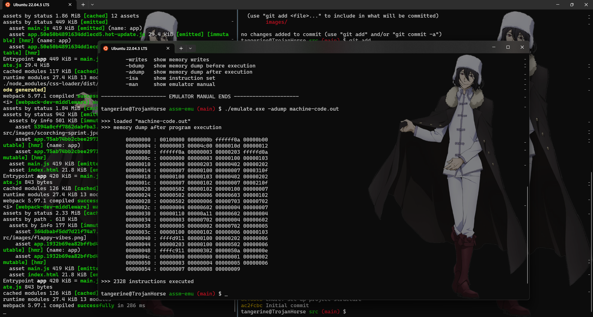
Two-pass assembler and emulator based on a SIMPLE instruction set.
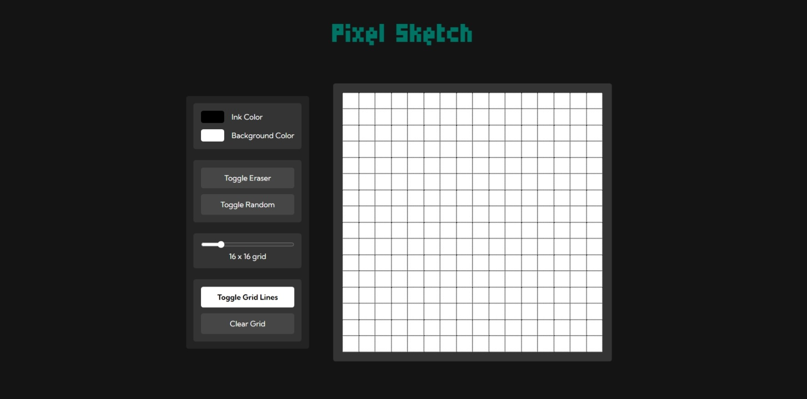
A browser version of something between a sketchpad and an Etch-A-Sketch.
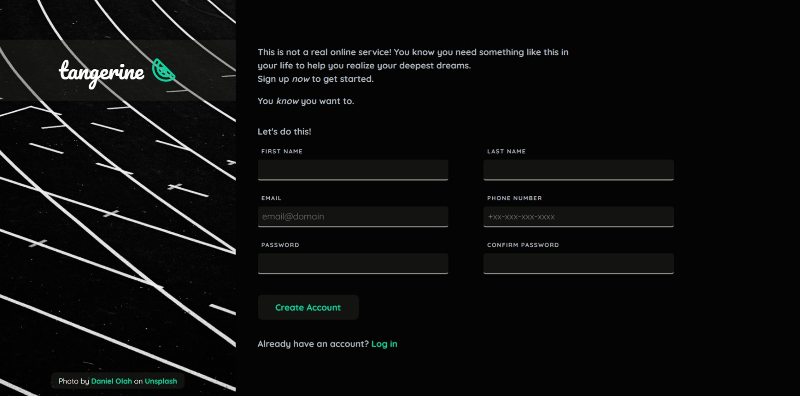
It's a sign-up form for an imaginary service.
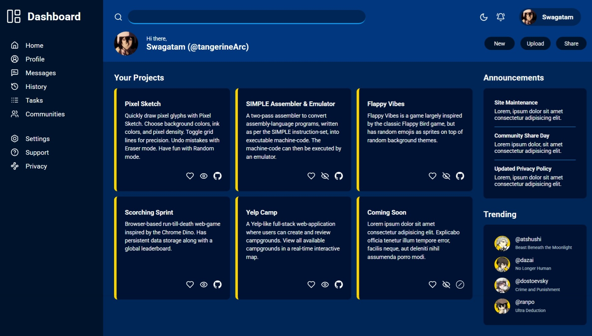
A full dashboard design implemented using CSS Grid.
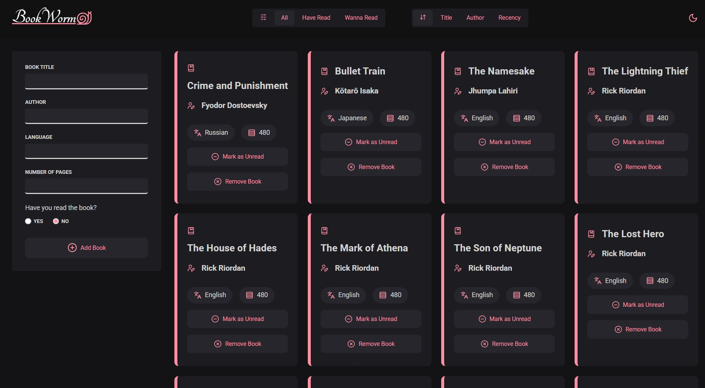
An inventory application to keep track of books.
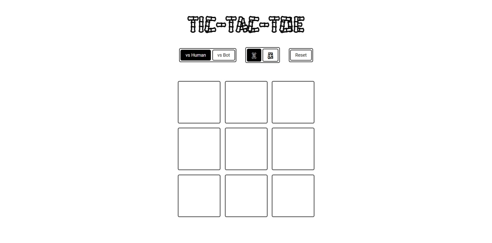
A Tic-Tac-Toe game you can play in your browser.
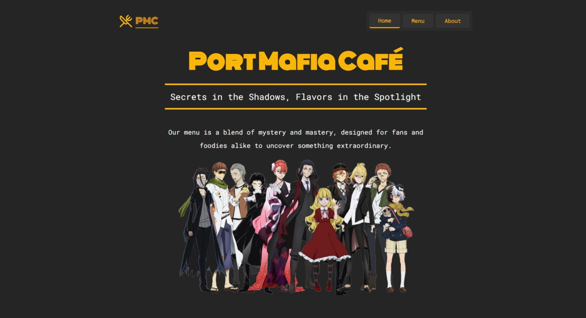
An anime themed restaurant site with tabbed browsing.
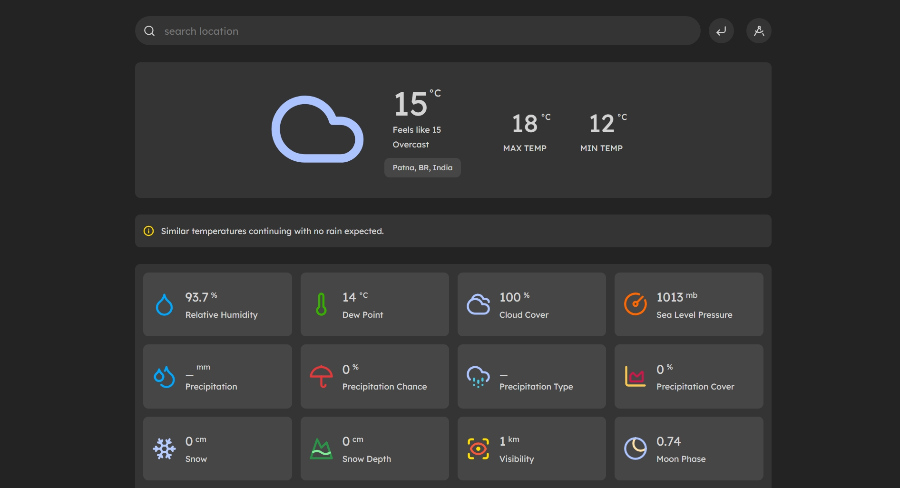
A weather forecast site using Visual Crossing API.
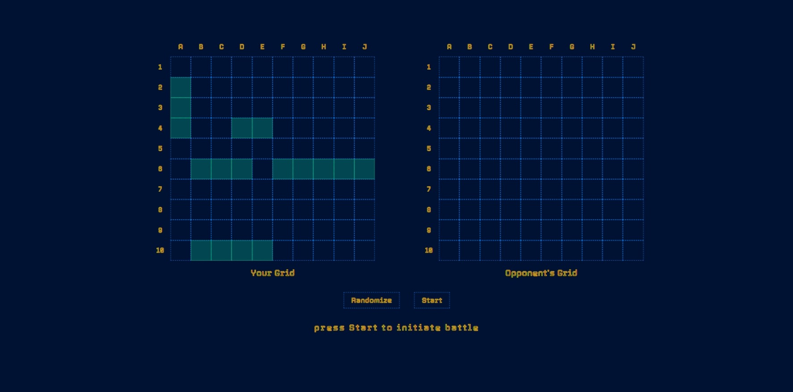
The classic game Battleship made for the browser.
A Yelp-like web-application where users can create and review campgrounds.
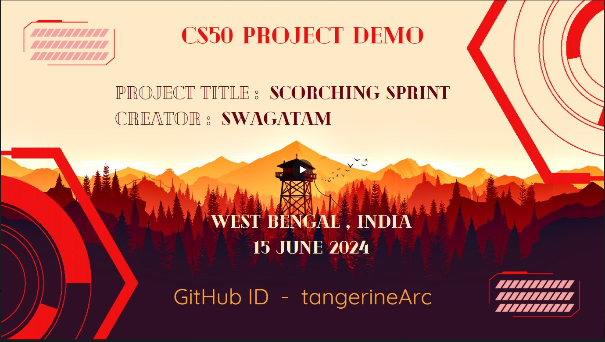
A browser-based run-till-death web-game inspired by the Chrome dino.
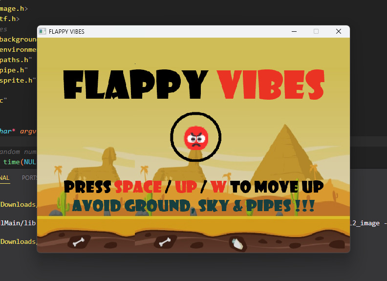
The classic Flappy Bird game revived with multiple emojis and themes.